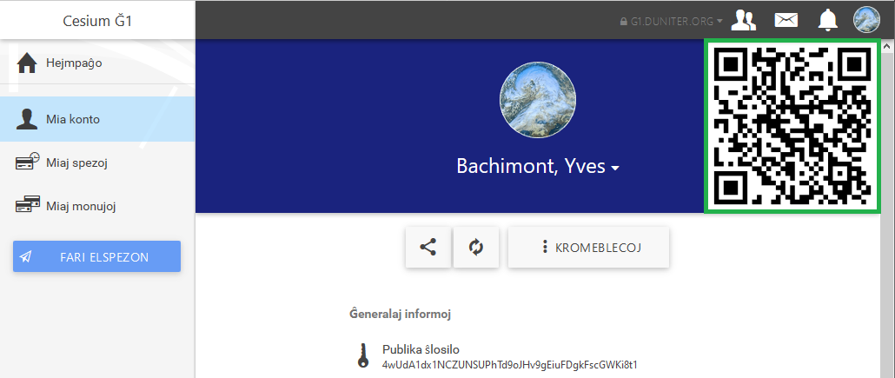

Por rapidigi kaj sekurigi viajn interŝanĝojn, kiam vi renkontas personojn fizike, vi povas printi vian QR-kodon.
QR-kodo povas utili laŭ du manieroj:
La homoj, kiuj aĉetos viajn varojn aŭ servojn, povos tiam skani la QR-kodon per ilia saĝtelefono, rekte per la programo Cesium, kaj facile fari elspezon al vi.
Por printi la QR-kodon, iru en la rubrikon "Mia konto"
Alklaku vian QR-kodon por grandigi ĝin.

Faru ekrankopion de la fenestro.
Pritondu la ekrankopion por konservi nur vian QR-kodon kaj krei vian ŝildeton aŭ vian afiŝon.
Programoj kiel GIMP aŭ LibreOffice Writer ebligas al vi efektivigi tiajn agojn.